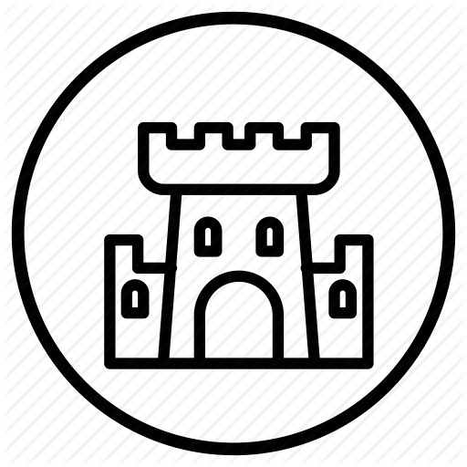

<ion-header>
  <ion-toolbar>
      <ion-buttons>
        <ion-back-button defaultHref="/tabs/tab3"></ion-back-button>
      </ion-buttons>
    <ion-title>Lugares cercanos</ion-title>
  </ion-toolbar>
</ion-header>

<ion-content padding>
    <ion-card>
        <ion-card-header>
          <ion-card-title>Cerca de usted</ion-card-title>
        </ion-card-header>
    
        <ion-card-content>
          En esta sección podrás observar un un listado de lugares cercanos a tu ubicación.
    
          <ion-list *ngFor="let item of nearPlaces">
            <ion-item (click)="seeDetails(item)">
              <ion-avatar slot="start">
                
              </ion-avatar>
              <ion-label>{{ item.nombre }}</ion-label>
            </ion-item>
          </ion-list>
        </ion-card-content>
      </ion-card>
</ion-content>
